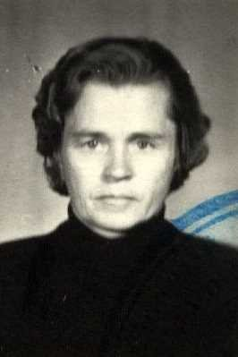

Годовицкая; Гадовицкая Клавдия Андреевна
Дата рождения30.05.1922
Место рожденияКрасноярский край, Даурский р-н, с. Мало-Лопатино; Красноярский край, Балахтинский р-н, д. М.-Лопатино; Красноярский край, Даурский р-н, с. Мало-Лопатина; Красноярский край, Даурский р-н, с. Малое Лопатино; с. Малое Лопатино, Даурский район,
Красноярский
Красноярский
Место призываДаурский РВК, Красноярский край, Даурский р-н
Место службыВС 2 ПрибФ; 131 гв. обс 23 гв. ск; 116 обс 19 гв. ск; 131 гв. обс 23 гв. ск; 2 ПрибФ; 131 гв. обс 23 гв. ск 6 гв. А ПрибВО
Воинское званиегв. техник-лейтенант; мл. техник-лейтенант; гв. мл. техник-лейтенант; техник-лейтенант; мл. лейтенант тех. сл.; лейтенант тех. службы
НаградыОрден Отечественной войны II степени; Орден Красной Звезды
ИсторияГв. техник-лейтенант, 30.05.1922, Красноярский край, Даурский р-н, с. Мало-Лопатино, Место службы: Даурский РВК, Красноярский край, Даурский р-н, ВС 2 ПрибФ
ID 92320158
ID 92320158